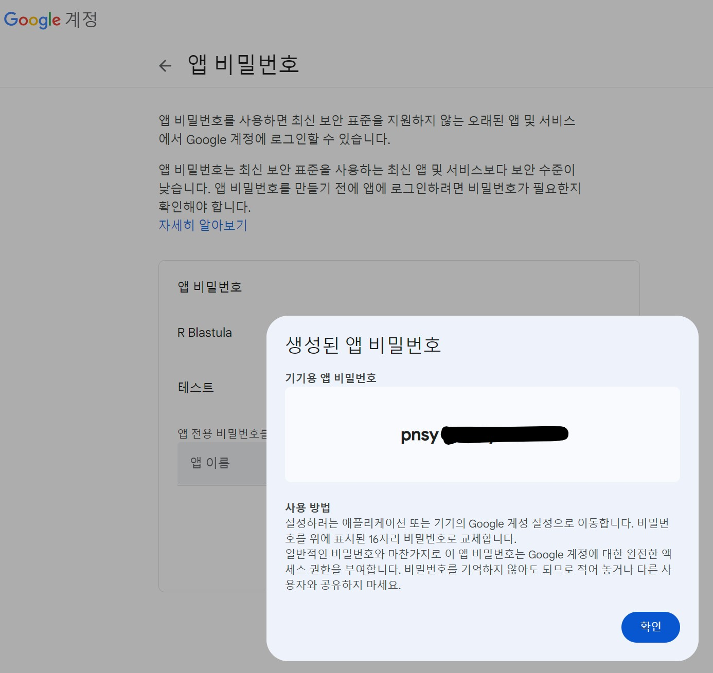

# 필요한 라이브러리 로드
library(tidyverse)
library(blastula)
# 저장된 모델 불러오기
simple_model <- readRDS("data/simple_solar_prediction_model.rds")
# 온도를 입력받아 일일 생산량을 예측하는 함수
predict_yield <- function(temperature) {
new_data <- data.frame(AMBIENT_TEMPERATURE = temperature)
predicted <- predict(simple_model, newdata = new_data)
return(predicted)
}
# 사용자로부터 온도 입력 받기
cat("예상 기온을 입력하세요 (°C): ")
user_temperature <- 10
# 예측 수행
predicted_yield <- predict_yield(user_temperature)
# 신뢰 구간 계산
new_data <- data.frame(AMBIENT_TEMPERATURE = user_temperature)
prediction_interval <- predict(simple_model, newdata = new_data, interval = "prediction")
# 예측 결과 시각화
temp_range <- seq(user_temperature - 10, user_temperature + 10, by = 0.5)
prediction_data <- data.frame(AMBIENT_TEMPERATURE = temp_range)
prediction_data$PREDICTED_YIELD <- predict(simple_model, newdata = prediction_data)전자우편 발송
생산량 예측
전자우편 발송
Gmail 앱 비밀번호
blastula 구글메일 설정 Sending Email Using SMTP방법은 다음과 같다.
- Google 계정에 로그인합니다.
- 보안 섹션으로 이동합니다.
- 2단계 인증이 활성화되어 있는지 확인합니다. 그렇지 않으면 먼저 활성화해야 합니다.
- “앱 비밀번호” 섹션에서 새로운 앱 비밀번호를 생성합니다. (앱 유형과 디바이스는 사용자 지정할 수 있습니다.)

# Create a credentials file for sending
# email through Gmail
create_smtp_creds_file(
file = "gmail_creds",
user = "kwangchun.lee.7@gmail.com",
provider = "gmail",
use_ssl = TRUE
)
test_message <- prepare_test_message()
test_message
test_message %>%
smtp_send(
from = "kwangchun.lee.7@email.net",
to = "victor@r2bit.com",
subject = "Testing the `smtp_send()` function",
credentials = creds_file(file = "gmail_creds")
)이메일 전송
# 이메일 내용 작성
email_body <- compose_email(
body = md(glue::glue("
# 태양광 발전량 예측 보고서
예상 기온: {user_temperature}°C
예측된 일일 생산량: {round(predicted_yield, 2)}
95% 예측 구간: {round(prediction_interval[1,'lwr'], 2)} - {round(prediction_interval[1,'upr'], 2)}
"))
)
# # 환경설정 - 앱 비밀번호 16자리 사용 (1번만 수행)
# create_smtp_creds_file(
# file = "gmail_creds",
# user = "kwangchun.lee.7@gmail.com",
# provider = "gmail",
# host = "smtp.gmail.com",
# port = 465,
# use_ssl = TRUE
# )
# Gmail 자격 증명 불러오기
creds <- creds_file("gmail_creds")
# 이메일 전송
email_body |>
smtp_send(
from = "kwangchun.lee.7@gmail.com",
to = "victor@r2bit.com",
subject = "태양광 발전량 예측 보고서",
credentials = creds
)
cat("예측 결과가 이메일로 전송되었습니다.\n")